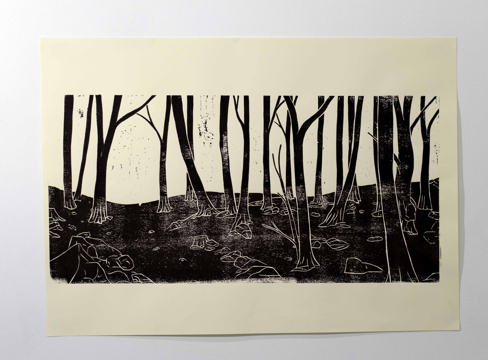

Xylogravure de foret 1 acrylic, papier150g 64 cm x 90 cm, 2022 23 cm x 30 cm

Xylogravure de foret 2 acrylic, papier150g 64 cm x 90 cm, 2022 85 cm x 41 cmOutils d’or, ciseau à bois Outil restauré, chêne, feuilles de laiton , 2022 3 cm x 28 cm x 3 cm DNSEP, isba 2024Outils d’or, ciseau à bois et gouge Outil restauré, chêne, feuilles de laiton , 2022 8 cm x 30 cm x 3 cm